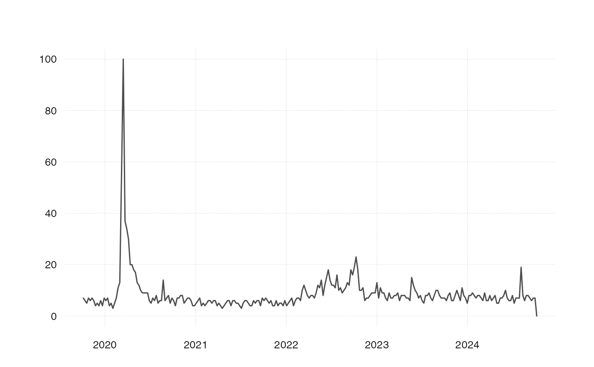

Wrapper around gtrendsR::gtrends() that modifies the original function by
a) vectorizing it, b) converting the result to tsboxable tibble and c)
retries if no result is returned.
ts_gtrends( keyword = NA, category = "0", geo = "CH", time = "today+5-y", retry = 5, wait = 5, quiet = FALSE )
| keyword | A character vector with the actual Google Trends query
keywords. Contrary to |
|---|---|
| category | A character vector, listing the categories, defaults to
|
| geo | A character vector denoting geographic regions for the query,
default is |
| time | A string specifying the time span of the query. Possible values are: Last hour Last four hours Last day Last seven days Past 30 days Past 90 days Past 12 months Last five years (default) Since the beginning of Google Trends (2004) Time span between two dates (ex.: "2010-01-01 2010-04-03") |
| retry | Number of attempts, in case the query request does not succeed. |
| wait | Seconds to wait between attempts, where waiting time is |
| quiet | If TRUE won't display messages related to server interactions. Default is FALSE. |
A tibble of time series for the different keywords or categories. If only a single keyword and a single category are specified, the tibble has columns time and value. If either more than one keyword, or more than one category are given, an additional column id indicates either the keyword, or the category.
The function takes the id's as strings, not the names. For example, "Arts & Entertainment" has to be specified as "2".
Multiple keywords or multiple categories can be specified, but not both.
x <- ts_gtrends("Rezession")#>x#> # A tibble: 261 x 2 #> time value #> <date> <int> #> 1 2015-06-28 2 #> 2 2015-07-05 5 #> 3 2015-07-12 2 #> 4 2015-07-19 3 #> 5 2015-07-26 2 #> 6 2015-08-02 2 #> 7 2015-08-09 3 #> 8 2015-08-16 6 #> 9 2015-08-23 8 #> 10 2015-08-30 3 #> # … with 251 more rows